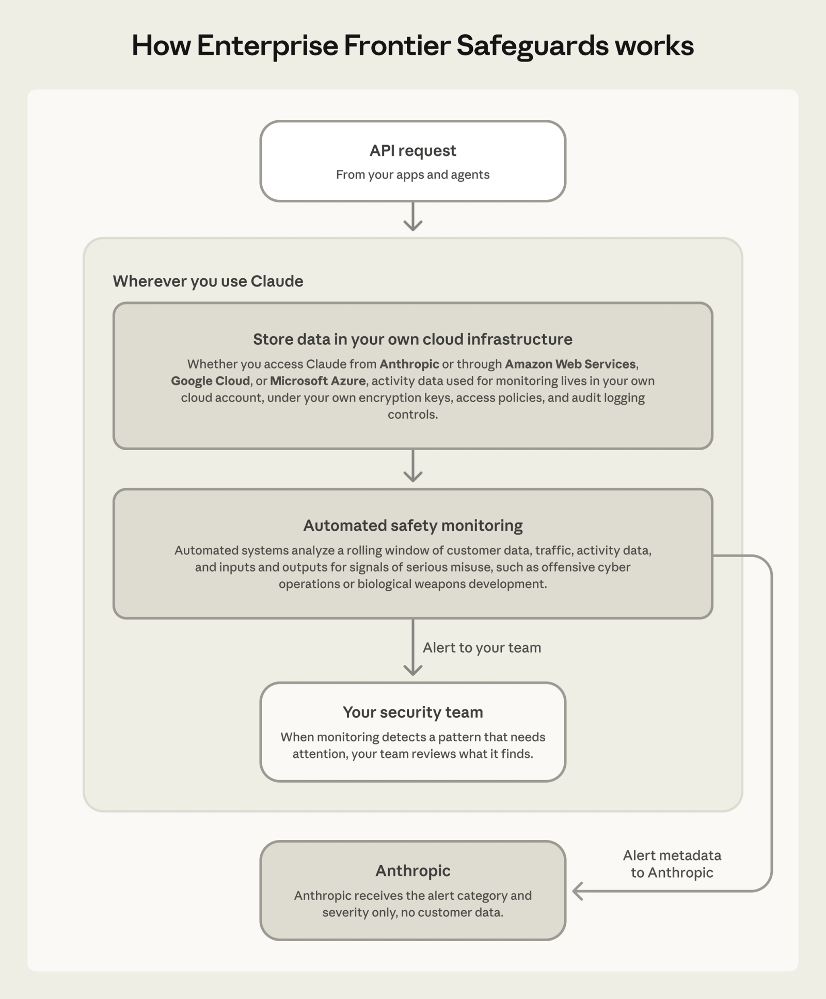

Today we’re announcing Enterprise Frontier Safeguards (EFS), a solution that combines the privacy of zero data retention (ZDR) with state-of-the-art safeguards for detecting misuse. EFS works by storing data in cloud infrastructure controlled by the customer, not Anthropic. EFS will be rolling out to customers in phases, starting later this fall. To make the transition smooth, eligible customers will receive ZDR on Fable 5 and Fable 5.1 until EFS is ready.
We developed EFS in close collaboration with more than 100 customers in industries like financial services, healthcare, manufacturing, telecom, law, retail, and the public sector, and with our cloud partners at Amazon Web Services, Google Cloud, and Microsoft Azure.
EFS will be supported on Claude Code, Claude Enterprise, the Claude Platform, Amazon Bedrock, Claude Platform on AWS, Google’s Agent Platform, and Microsoft Foundry.
Solving the dilemma of frontier security
Mythos-class models, like Claude Fable 5.1, represent a major increase in intelligence and agentic capabilities. However, with that increase comes the potential for both misuse and autonomous misbehavior.
Over the last few months, we’ve seen substantial evidence of attempted misuse of AI models. These range from typical forms of abuse, such as fraud, to sophisticated cyberattacks, which can include agents autonomously engaging in destructive behavior. Some of these instances involve theft or misappropriation of enterprise customers’ credentials, which are difficult to detect without the ability to monitor traffic and detect abnormal behavior.
Furthermore, because the most sophisticated misuse can involve many tasks spread across multiple sessions and accounts, it is not sufficient to run automated analysis on each interaction separately and then instantaneously discard the data. Effective detection requires storing data for a meaningful period of time so that it can be correlated across time and accounts.
For this reason, we introduced 30-day data retention starting with Fable 5. This policy was not motivated by a desire to train on enterprise data: Anthropic has never trained on enterprise data without explicit permission, and never will.
The enterprises we worked with generally understood the safety and security value of data retention, but many–especially in regulated industries–found it difficult to use models with data retention. We therefore sat down with customers to design a solution that could provide the best of both worlds: the privacy of ZDR and the safety allowed by monitoring across time and accounts.
Designed with our customers
We built Enterprise Frontier Safeguards with feedback from the experts who will use it every day: security, product, compliance, and delivery teams. One of the groups we worked with was the Analysis and Resilience Center for Systemic Risk (ARC), whose members include the chief information security officers of the largest US banks, including Goldman Sachs, Morgan Stanley, Citi, Bank of America, and Wells Fargo.
We also worked with leaders at companies such as Comcast, KPMG, Mastercard, Salesforce, and Visa, to make sure the design held up across industries. Our conversations spanned a quarter of the Fortune 100, every US global systemically important bank, and virtually every regulated industry.
Here is what we heard from this wide range of customers, and what we built into EFS to address these common concerns:
On monitoring
Enterprises have long applied monitoring for insider risk, and now want help upleveling monitoring for agents. Their concerns were about Anthropic’s automated monitoring systems meeting their regulatory standards.
With EFS, customers control how data gets reviewed. When monitoring detects a pattern that needs attention, those signals are sent directly to customers so they can review what the automated systems detected.
On data storage
It’s a lot of work for enterprises to add another “trusted data vendor” for a number of reasons. They need to notify all of their customers who these vendors are and update contracts. They also have internal requirements for safely storing and auditing data, given its high level of sensitivity. Because of these concerns, we architected EFS so that customers have the ability to store data on their existing cloud infrastructure.
In EFS, customers can control their data storage and management. Customers want the ability to have their data live in infrastructure they control, under their own encryption keys, access policies, and audit logging. Activity data used for monitoring can be stored in the customer’s own cloud account (such as Amazon S3, Azure Blob Storage, or Google Cloud Storage).
On automated and human review
Even as automated review is becoming more effective, a person looking at a flag still adds value by confirming real misuse and clearing false positives. But what we heard from many customers, especially those in regulated industries, is that the person doing that review needs to be one of their own. Many operate under rules that tightly govern who may see certain information—privileged legal material, non-public information, drug-safety reports. Their teams are already trained and cleared for that work.
EFS has automated safety monitoring, no Anthropic human review required. Customers want protection against cyberattacks, and appreciate that these can be difficult to detect if they unfold across many sessions and accounts. With EFS, automated systems analyze a rolling window of traffic for signals of serious misuse, including attempts to develop offensive cyber or biological capabilities and signs of stolen or leaked credentials. Those flags go directly to the customer and their people take it from there – no human review by Anthropic employees is required.
AI controls need to be designed to protect sensitive information, and model safeguards are an important part of that process. Anthropic engaged us as they developed Enterprise Frontier Safeguards to ensure alignment with our requirements and standards.Matt Chung Chief Information Security Officer and Head of Technology Risk
Enterprise Frontier Safeguards gives us exactly what we asked for: our logs stay in a Wells-managed environment under Wells-managed keys. We keep custody of our data while Anthropic operates the detection. That split is what lets our teams put frontier models to work safely and meet our obligations to customers, employees, and regulators. We helped shape these safeguards because our industry needs them.Munish Kumar Sharma Chief Information Security Officer
As a company that runs critical infrastructure, the capability of models is important. Just as important are solutions that allow us to keep our data in our own account, and Enterprise Frontier Safeguards settled it.Noopur Davis EVP, Chief Information Security and Product Privacy Officer
Eight of our members worked with Anthropic to define what it would take to run the most capable frontier models inside a systemically important bank: who holds the data, who holds the keys, what automated review can and cannot see, and under what conditions a human is ever permitted to look. This collaboration is leading to the development and delivery of improved safeguards and standards that could scale across our industry and beyond.Scott DePasquale President and CEO
One of the key tenets of the safeguards architecture is the ability for us to retain data and have it held outside the model itself, protected within our environment. There are areas of the firm, and of our clients' work, that are regulated and highly sensitive. Those safeguards actually allow us to apply AI in parts of the business that we wouldn't have been able to before.Todd Lohr National Managing Partner, Clients and Markets [Service Partner]

Our customers have trusted us with their data for more than two decades. That experience is exactly why we wanted to help think this through with Anthropic, rather than wait on the sidelines. We were able to work together on new security and privacy capabilities at the architecture level, not just the policy level.Meir Amiel President, Chief Trust and Infrastructure Officer
Our clients want to put frontier models to work, and their security teams want the data to stay in infrastructure they control. Anthropic built Enterprise Frontier Safeguards with more than a hundred enterprises to do exactly that.Lan Guan Chief AI and Data Officer [Service Partner]

As AI models take on more regulated, sensitive workloads, scaling responsibly also comes down to architecture, not just policy commitments. Direct control over the data environment, paired with pattern-based automated safety monitoring, gives enterprises the concrete, structural capabilities they need to deploy with real oversight, accountability, and confidence.Adnan Amjad US Cyber Leader [Service Partner]
The safeguards and the design of them—clearly, you heard our feedback. They put us in the driver's seat. The logs are under our control; they don't go anywhere else unless we want them to. It gives us control of the data, control of the information, and control of what's done after something that might exceed a safeguard is detected.Philip Martin Chief Information Security Officer
As AI becomes more embedded across the enterprise, security and trust are what move organizations from experimentation to deployment at scale. Enterprise Frontier Safeguards will build those in from the start: monitoring data stays in infrastructure the customer controls, and their own team decides who can access it.Morgan Adamski US Cyber, Data & Tech Leader [Service Partner]
Keeping customer data confidential is a promise Snowflake makes to every customer. We've always moved fast getting frontier models into their hands. The hard part was doing that safely under the strictest data guarantees. We partnered with Anthropic to design Enterprise Frontier Safeguards so we can do both: data stays in the customer's environment, under keys they control, running Anthropic's most capable models from day one. This is what responsible frontier AI looks like when it's built with platforms in mind.Mayank Upadhyay Chief Security and Trust Officer

At Stripe, protecting customer data is foundational to how we operate. Anthropic’s Enterprise Frontier Safeguards will enable us to use covered frontier models while retaining conversation logs in Stripe’s AWS environment, with access and review governed by Stripe’s security controls.Matthew Kemelhar Head of Security
Rogo’s customers expect access to the best intelligence available, but never at the expense of security and guardrails around their data. Enterprise Frontier Safeguards will bring the most capable models to financial institutions while meeting the institutional-grade data requirements they demand. That combination of frontier intelligence and enterprise-grade controls is critical to deploying AI across financial services.Strib Walker Head of Product
Companies trust Cognition's autonomous engineers with real production work, and that trust depends on their work staying private. With Enterprise Frontier Safeguards, customer data and identities never leave our side. It will let us bring frontier AI to production work, no privacy tradeoff required.Scott Wu CEO
Our customers' code and data are some of their most valuable intellectual property. Protecting that information is foundational to how we build at Factory. Together with Anthropic, we're enabling customers to use Claude's most capable models while keeping control of proprietary data in their hands. Enterprise Frontier Safeguards gives enterprises access to frontier intelligence with the data protections their security teams require.Eno Reyes Co-founder and CTO
We have always maintained an unwavering commitment to client confidentiality and security. The leading legal and professional teams we serve view these principles as nonnegotiable, and we hold ourselves to the same standard. Enterprise Frontier Safeguards reflects this commitment, enabling customers with the most rigorous confidentiality requirements access to frontier models without the model provider retaining their data.John LaBarre Chief Legal Officer
01 / 16
How EFS works
These controls are designed to work the same way whether you access Claude directly from Anthropic or through a cloud partner. Customers on Amazon Web Services, Google Cloud, and Microsoft Azure will get equivalent controls, with their activity data stored in their own cloud account, in the environment they already trust. We’re also working to support third-party offerings that serve customers that are eligible for Enterprise Frontier Safeguards.
Customer-owned storage, Customer-Managed Encryption Keys, and fully automated review are each opt-in, so you enable the ones your organization needs. None of them change model behavior, API pricing, or rate limits.
Anthropic doesn’t charge for Enterprise Frontier Safeguards. If customers elect to store their data in their cloud account, their cloud provider bills them for that storage, as well as reads, writes, and data egress fees, the same way it bills any other resource.

Getting started
Enterprise Frontier Safeguards will roll out to customers in phases, with the goal of making it broadly available later this fall. To request access to Enterprise Frontier Safeguards, please complete this form.